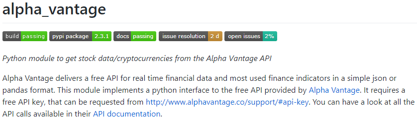
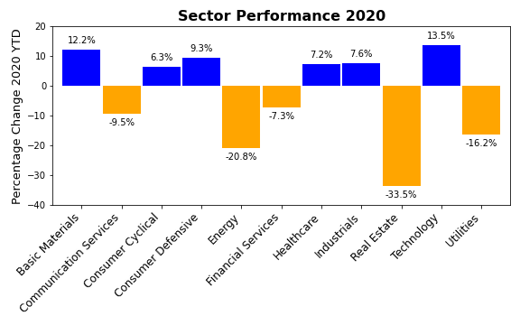
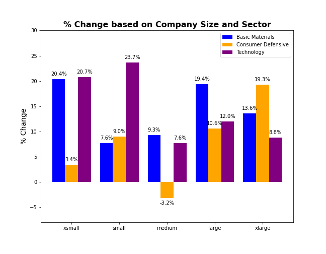

Our project is looking to uncover industries and companies that have benefited financially from the COVID-19 pandemic. We decided to look at a broad index of small-cap stocks to try and uncover trends. We chose small-cap stocks as they tend to be more tightly tied to the economy over shorter periods of time when compared with large-cap and blue chip stocks. We chose our companies by utilizing the SPDR® S&P 600™ Small Cap ETF index fund.
|  | We identified an API, AlphaVantage, that allowed us to pull the stock price information for all 600 companies on a monthly basis going back to 1999 (if the companies existed at that point). By leveraging a user created package created by Romel Torres (https://github.com/RomelTorres/alpha_vantage) to pull the stock price information directly into a Pandas Dataframe. We then appended each companies information to a stock prices CSV. |
In order to retrieve related company information (Sectors, Industry and Number of Employees) we created a separate API pull utilizing the same Alpha Vantage API and pulled company information. After completing the API pull, we appended the information to a company information CSV and renamed the headers.
After having all of the data pulled, we needed to merge the company information with the stock prices and [clean up the data](cleaning-data.ipynb) to allow us to generate plots and analysis. This cleaning data file handled the merge of the dataframes and then seperated the stock listings into yearly files for analysis, such as a [2020 Prices File](api-data/yearly_summary/prices_for_2020.csv). We also grouped the data by [sector](api-data/sector_chgs.csv) and determined which sectors were outperforming the others. We landed on three sectors:
One of the first things we wanted to look at was the [percentage change](percentage_change_calculations.ipynb) for each [company](api-data/yearly_summary/ticker_pct_chg_2020.csv) in the various yearly files we created. This allowed us to group by sector and determine [sector performance](api-data/yearly_summary/sector_pct_chg_2020.csv) on a percentage change basis.
The [moving averages](moving-averages.ipynb) file goes through a listing of the top 20 companies out of our index fund and generates [plots](images/ryam_avg.png) for each of our top 20 stocks that includes the monthly prices, a 6 month moving average as well as an average price of all stocks in the index fund.
We also generated scatter plots to compare [company performance (percentage change) and company size](Sectors_vs_Company_Size.ipynb). An example is: [basic materials](images/basic_mats_scatter.png).
Finally, our [industry plots](industry_plots.ipynb) file takes our data and generates some analysis of the chosen Sectors for plotting and comparison. We binned the companies by number of employees and determined [performance by company size](images/perc_by_size.png). In addition we created plots showing the average stock prices of our [chosen sectors](images/selected_sectors_vs_all.png) vs the total fund throughout 2020.
##### CWRU Project 1 Group 4